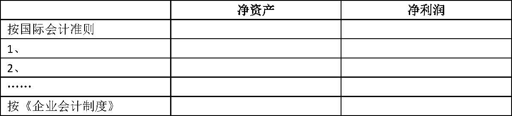

中国证券监督管理委员会
关于发布《公开发行证券的公司信息披露编报规则第15号——财务报告的一般规定》的通知
证监发〔2001〕160号
各有关拟公开发行证券的公司、已上市公司及会计师事务所：
为提高拟公开发行a股的公司以及已上市a股公司财务信息披露的质量，保护投资者的合法权益，我们制定了《公开发行证券的公司信息披露编报规则第15号——财务报告的一般规定》，现予发布，请遵照执行。
中国证券监督管理委员会
2001年12月30日
公开发行证券的公司信息披露编报规则第15号——财务报告的一般规定
第一章 总则
第一条 为规范公开发行证券的公司财务信息披露行为，保护投资者的合法权益，依据《中华人民共和国公司法》、《中华人民共和国证券法》等法律、法规及中国证券监督管理委员会（以下简称“中国证监会”）的有关规定，制定本规定。
第二条 凡在中华人民共和国境内首次公开发行股票和已经公开发行股票并在证券交易所上市的股份有限公司（以下简称“公司”），按照有关准则需要披露完整财务报告时应遵循本规定。其他情况下需参照本规定的，从其特别规定。
第三条 本规定中所称的“母公司”是指上市公司本身。
第四条 本规定是对财务报告披露的最低要求。不论本规定是否有明确规定，凡对使用者作出决策有重大影响的财务信息，公司均应予以充分披露。本规定某些具体要求对公司确实不适用的，公司可根据实际情况，在不影响披露内容完整性的前提下做出适当修改，但应在财务报表附注中作出说明。
第五条 由于商业秘密等原因导致本规定某些信息确实不便披露的，首次公开发行股票公司可向中国证监会申请豁免，已经公开发行股票并在证券交易所上市的股份有限公司可向证券交易所申请豁免，经批准后，可以不予披露，并报中国证监会备案。
第六条 公司不得编制和对外提供虚假的或者隐瞒重要事实的财务报告。公司董事会及其董事必须保证提供的财务报告的真实性、完整性，并就其保证承担个别和连带的法律责任。
第七条 凡根据有关规定，需对公司财务报告进行审计的，应由具有证券期货相关业务资格的会计师事务所审计，并由上述会计师事务所盖章及由两名或两名以上具有证券期货相关业务资格的注册会计师签名盖章。合伙会计师事务所出具的审计报告，应当由一名对审计项目负最终复核责任的合伙人和一名负责该项目的注册会计师签名盖章；有限责任会计师事务所出具的审计报告，应当由会计师事务所主任会计师或其授权的副主任会计师和一名负责该项目的注册会计师签名盖章。
编制合并财务报表的公司，纳入合并范围的子公司以及未纳入合并范围但对公司财务报告有重大影响的控股子公司以及不属于合并报表范围但对公司财务报告有重大影响的联营企业的财务报告，也应由具有证券期货相关业务资格的会计师事务所审计。财务报告审计的会计师事务所和签字注册会计师对所出具的审计报告负责。
第八条 特殊行业公司财务报告的披露除需遵守本规定外，还需遵守中国证监会颁布的就该行业有关财务报告的特别规定。
第二章 财务报表
第九条 公司编制及披露的财务报表应符合财政部、中国证监会颁布的相关会计和披露准则、制度的规定。
第十条 本规定要求披露的财务报表包括资产负债表、利润及利润分配表（含利润表的补充资料）、现金流量表。
（一）首次发行股票公司按本规定提供的财务报表应为不少于最近三个会计年度的利润及利润分配表、不少于最近三年年末的资产负债表以及不少于最近一个会计年度的现金流量表。非整体改制重组设立且运行不足三年的首次发行股票公司，在有关资产负债表的披露方面，只需披露改组设立股份有限公司后各年年末的资产负债表。首次发行股票公司为股份有限公司运行不足三年的，可以不提供设立日前的利润分配表。
（二）发行新股的上市公司按本规定提供的财务报表执行上市公司新股发行招股说明书的有关规定。
（三）披露定期报告的上市公司按本规定提供的财务报表应为报告期末以及前一个年度末的比较式资产负债表、该期和去年同期的比较式利润及利润分配表、该期的现金流量表。
第十一条 编制合并财务报表的公司，除提供合并财务报表外，还应提供母公司财务报表。
第十二条 公司编制的财务报表之间、财务报表各项目之间、财务报表中本期与上期的有关数字之间，应当相互勾稽。
第十三条 公司提供的财务报表中会计数据的排列应自左至右，最左侧为最近一期数据；表内各主要报表项目应标有附注编号，并与财务报表附注编号相一致；财务报告摘要部分中引用编号应与原财务报表附注的编号相一致；财务报表以及财务报表附注披露的金额单位可以为人民币元、千元或百万元。
第十四条 公司披露的财务报表编制应加盖公司公章，由公司会计机构负责人（会计主管人员）、主管会计工作的公司负责人、公司法定代表人签名并盖章。若公司设置总会计师的，总会计师应签名并盖章。
第三章 财务报表附注
第十五条 公司应按照有关 企业会计准则、会计制度和本规定的要求，编制和披露财务报表附注。
第十六条 财务报表附注应当对财务报表中需要说明的交易和事项作出真实、完整、明晰的说明。
第一节 公司的基本情况
第十七条 首次发行股票公司应简述公司历史沿革、改制情况、行业性质、经营范围、主要产品或提供的劳务，公司的基本组织架构等公司的有关资料。公司在报告期间内因收购、出售资产或吸收合并等引起公司重大资产或主营业务发生变更的，应予以说明。
设立股份有限公司运行不足三年的首次发行股票公司，应说明编制股份公司设立以前报告期内各年份财务报表会计主体及其确定方法。
第十八条 已上市公司再筹资和披露定期报告时至少应简述公司历史沿革、所处行业、经营范围、主要产品或提供的劳务等。公司在报告期间内因收购、出售资产或吸收合并等引起公司主营业务发生变更的，应予以说明。
第二节 会计政策、会计估计和合并财务报表的编制方法
第十九条 公司应按照如下要求披露报告期内采用的主要会计政策、会计估计和合并财务报表的编制方法：
（一）公司目前执行的会计准则和会计制度。首次发行股票公司为股份有限公司运行不足三年的，应说明公司原来执行的会计准则和会计制度，并说明按本规定要求提供的公司设立前的财务报表是如何按目前执行的会计准则和会计制度进行调整的。
（二）会计年度。
（三）记账本位币。
（四）记账基础和计价原则。
（五）发生外币业务时采用的折算汇率、期末对外币账户的外币余额进行折算所采用的汇率，以及汇兑损益的处理方法。
（六）各主要财务报表项目的折算汇率，以及外币报表折算差额的处理方法。
（七）编制现金流量表时现金等价物的确定标准。
（八）短期投资计价及其收益确认方法，短期投资跌价准备的确认标准、计提方法。
（九）应收款项坏账的确认标准，坏账损失的核算方法以及坏账准备的确认标准，计提方法和计提比例。
（十）存货分类，取得和发出的计价方法，存货的盘存制度以及低值易耗品和包装物的摊销方法，存货跌价准备的确认标准、计提方法。
（十一）长期股权投资计价及收益确认方法，股权投资差额的摊销方法和期限；长期债权投资计价及收益确认方法，债券投资溢价或折价的摊销方法；长期投资减值准备的确认标准、计提方法。
（十二）委托贷款计价，利息确认方法以及委托贷款减值准备的确认标准、计提方法。
（十三）固定资产的标准、分类、计价方法和折旧方法；融资租入固定资产的计价方法；固定资产减值准备的确认标准、计提方法。
（十四）在建工程结转为固定资产的时点；在建工程减值准备的确认标准、计提方法。
（十五）借款费用资本化的确认原则、资本化期间以及借款费用资本化金额的计算方法。
（十六）无形资产的计价方法、摊销方法、摊销年限；无形资产减值准备的确认标准、计提方法。
（十七）长期待摊费用的摊销方法、摊销年限。
（十八）应付债券的计价及债券溢价或折价的摊销方法。
（十九）销售商品、提供劳务及让渡资产使用权等日常活动取得的收入所采用的确认方法。
（二十）所得税的会计处理方法。
（二十一）会计政策、会计估计变更的内容、理由和对公司财务状况、经营成果的影响数。
（二十二）重大会计差错的内容和更正金额、原因及其影响。
（二十三）编制合并财务报表时合并范围的确定原则，合并所采用的会计方法。
第三节 税项
第二十条 公司应披露主要税种和税率，如增值税、所得税等；若有税负减免的，应说明批准机关、文号、减免幅度及有效期限。第四节控股子公司及合营企业。
第四节 控股子公司及合营企业
第二十一条 公司应披露其所控制的境内外所有子公司及合营企业的全称、业务性质、注册资本、经营范围以及本公司对其实际投资额和所占权益比例等。未纳入合并财务报表范围的子公司，应说明原因及对公司财务状况、经营成果的影响。
第二十二条 对纳入合并范围但母公司持股比例未达到50%以上的子公司，应说明纳入合并范围的原因。
第二十三条 公司报告期内合并报表范围如发生变更的，应当披露变更内容、原因。若发生购买、转让股权而增加控股子公司、合营企业的情况，应说明每个新增或转让股权的购买日及其确定方法。
第二十四条 按照比例合并方法进行合并的公司，应特别说明。
第五节 财务报表项目附注的要求
第二十五条 编制合并财务报表的公司，应按照本准则对合并会计报表项目进行注释，还应对母公司财务报表的主要项目进行注释。
第二十六条 对资产负债表中的资产、负债项目，注释最近期间的期末、期初比较数据，股东权益项目、利润表及利润分配表项目应按照比较财务报表逐期列示并说明各期数据变动情况。
第二十七条 对资产负债表中的外币账项，应列示其原币、折算汇率、折算的记账本位币金额。
第二十八条 具体的报表项目应按以下要求进行注释：
（一）按现金、银行存款、其他货币资金分别列示货币资金情况。有抵押、冻结等对变现有限制或存放在境外、或有潜在回收风险的款项应单独说明。
（二）按股权投资、债券投资、其他投资分别列项说明短期投资情况，其中股权投资中的股票投资、债券投资中的国债投资和其他债券投资应单独列示。能够列明期末市价的股票投资和债券投资，应列明报表日市价及资料来源（若报表日是法定公休日，应披露报表日最近一个交易日市价，下同）；其他投资项下对某一投资对象的投资额占短期投资总额10%（含10%）以上的，还应分别披露资金投入时间和所得收益等。对流动性差的证券投资市价来源也需特别说明。
说明短期投资跌价准备的增减变动情况，计提短期投资跌价准备所选用的证券期末市价的资料来源。
说明投资变现的重大限制。若不存在上述情况，也应予以说明。
应单独说明本项目中公司1年内到期的委托贷款的本金、利息、受托人名称及计提的减值准备金额。
（三）列示应收票据的种类、金额。已用于质押的商业承兑汇票，应单独列示出票单位、出票日期、到期日、金额等重要事项。
（四）分项列示应收股利的金额，对其中金额较大的，应说明其性质或内容。
（五）分项列示应收利息的金额，对其中金额较大的，应说明其性质或内容。
（六）应按不同账龄段（如1年以内、1-2年、2-3年、3年以上）分别列示应收款项（含应收账款和其他应收款）金额、占应收款项总额的比例、坏账准备计提比例和坏账准备金。
对应收款项应说明如下事项：
1、本年度全额计提坏账准备，或计提坏账准备的比例较大的（如计提比例超过40%及以上的，下同）应收款项，应单独说明其计提的比例及其理由；
2、以前年度已全额计提坏账准备，或计提坏账准备的比例较大，但在本年度又全额或部分收回的，或通过重组等其他方式收回的应收款项，应说明其原因，原估计计提比例的理由，以及原估计计提比例的合理性；
3、对某些金额较大或账龄较长的应收款项不计提坏账准备，或计提坏账准备比例较低（一般为5%或低于5%）的理由；
4、本年度实际冲销的应收款项性质、理由及其金额。若实际冲销的款项涉及关联交易产生的，还应单独披露；
5、应收款项中如有持公司5%（含5%）以上表决权股份的股东单位欠款，应予以说明，并单独列示；如无此类欠款，也应予以说明；
6、金额较大的其他应收款，应说明其性质或内容；
7、列示应收账款、其他应收款项目前五名金额合计，及占应收账款、其他应收款总额的比例。
（七）应按不同账龄段列示预付账款余额、及各账龄段余额占预付账款总额的比例。账龄超过1年的预付账款，应说明未收回的原因。
预付账款中如有预付持公司5%（含5%）以上表决权股份的股东单位的款项，应单独列示。
（八）分项列示应收补贴款的金额、性质或内容。
（九）按在途物资、原材料、包装物、低值易耗品、库存商品、委托加工物资、委托代销商品、受托代销商品、分期收款发出商品等分项列示存货情况。
分项列示计提的存货跌价准备及其增减变动情况，并说明存货可变现净值的确定依据。
（十）应按费用类别披露待摊费用年末结存余额的原因和各项费用的期初数、期末数。
（十一）按种类列示一年内到期的长期债券投资的面值、年利率、初始投资成本、到期日、本期利息、累计应收或已收利息、期末余额。
按投资种类列示一年内到期的其他债权投资初始投资成本、年利率、到期日、本期利息、累计应收或已收利息、期末余额。
（十二）列示其他流动资产的情况，金额较大的应列示其内容和金额。
（十三）按子公司投资、对合营企业投资、对联营企业投资和其他股权投资分项列示长期股权投资情况。
对长期股票投资，还应按被投资单位列示股份类别、股票数量、占被投资公司注册资本的比例、初始投资成本，计提的长期投资减值准备金额、增减变动情况以及计提的原因。若股票有市价的，应列示股票期末市价。
对其他股权投资，应按被投资公司名称、投资期限、占被投资单位注册资本比例、投资金额分项列示。若实际投资比例与注册资本比例不一致，应予以披露并说明原因。分项列示计提的长期投资减值准备金额、增减变动情况以及计提的原因。
若股权投资采用权益法核算，应列示初始投资额、追加投资额、被投资单位权益增减额、分得的现金红利额和累计增减额，被投资单位与公司会计政策的重大差异，投资变现及投资收益汇回的重大限制等。
对股权投资差额应按被投资单位列示初始金额及形成原因、摊销期限、本期摊销额、摊余价值。
（十四）应按种类列示长期债权投资的面值、年利率、初始投资成本、到期日、本期利息、累计应收或已收利息、期末余额，计提的长期投资减值准备金额、增减变动情况以及计提的原因。
对其他债权投资，应按投资单位列示初始投资成本、年利率、到期日、应计利息、累计应收或已收利息、期末余额，计提的长期投资减值准备金额、增减变动情况以及计提的原因。
（十五）应按类别分项列示固定资产期初余额、本期增加额、本期减少额及期末余额。固定资产中如有在建工程转入、出售、置换、抵押或担保等情况，应予以说明。
通过融资租赁租入的固定资产应披露每类租入资产的账面原值、累计折旧、账面净值。
通过经营租赁租出的固定资产应披露每类租出资产的账面价值。
应按类别分项列示累计折旧期初余额、本期计提额、本期减少额及期末余额。
分项列示计提的固定资产减值准备金额、增减变动情况以及计提的原因。
（十六）分项列示各类工程物资的期初、期末余额。
（十七）分项列示在建工程的名称、预算数、期初余额、本期增加额、本期转入固定资产额、其他减少额、期末余额、资金来源、工程投入占预算的比例。
分项列示期初余额、本期增加额、本期转入固定资产、其他减少额、期末余额中所包含的借款费用资本化金额。
用于确定利息资本化金额的资本化率应单独披露。
工程项目资金来源应区分募股资金、金融机构贷款和其他来源等。
分项列示计提在建工程减值准备金额、增减变动情况以及计提的原因。
（十八）分项列示公司转入清理但尚未清理完毕的固定资产清理账面价值及转入清理的原因。
（十九）分项列示无形资产的取得方式、原值、期初余额、本期增加额、本期转出额、本期摊销额、累计摊销额、期末余额、剩余摊销年限。
对于在报告期内发生的单项价值在100万元以上的无形资产，若该资产原始价值是以评估值作为入账依据的，还应披露评估机构名称、评估方法。
分项列示计提无形资产减值准备金额、增减变动情况以及计提的原因。
（二十）分项列示长期待摊费用的原始发生额、期初余额、本期增加额、本期摊销额、累计摊销额、期末余额、剩余摊销年限。
（二十一）应分项列示公司除以上长期资产项目外的其他长期资产的金额。金额较大的其他长期资产，还应列示其内容。
（二十二）应列示公司尚未转回的时间性差异影响所得税的递延税款借项金额、发生原因。
（二十三）按借款条件（信用借款、抵押借款、保证借款、质押借款等）分项列示短期借款金额。
对已到期未偿还的短期借款，应单独列示贷款单位、贷款金额、贷款利率、贷款资金用途、未按期偿还的原因及预计还款期，并在期后事项中反映报表日后是否已偿还。
（二十四）按应付票据的种类分项列示其金额，并说明本会计年度内将到期的金额。
（二十五）对于应付款项，包括应付账款、预收账款和其他应付款等，说明有无欠持有本公司5%（含5%）以上表决权股份的股东单位的款项；如无此类欠款，也应说明。
账龄超过3年的大额应付账款及其他应付款，应说明未偿还的原因，并在期后事项中反映报表日后是否偿还。金额较大的其他应付款，也应说明其性质或内容。
账龄超过1年的预收账款，应说明未结转的原因。
（二十六）披露应付工资中属于拖欠性质或工效挂钩的部分。
（二十七）按主要投资者列示欠付的应付股利金额并说明原因。
（二十八）按税种分项列示应交税金金额，并说明报告期执行的法定税率，对于超过法定纳税期限的，应列示主管税务机关的批准文件。
如果各分公司、分厂异地独立缴纳所得税，应说明所执行的所得税税率。
（二十九）分项列示其他应交款的期末余额、性质及计缴标准。
（三十）应按费用类别披露预提费用年末结存余额的原因和各项费用的期初数、期末数。
（三十一）按对外提供担保、商业承兑票据贴现、未决诉讼、产品质量保证等项目分别列示公司计提的各项预计负债。
（三十二）按一年内到期的长期借款、应付债券、长期应付款分项列示一年内到期的长期负债，其附注要求同“长期借款”、“应付债券”、“长期应付款”。对已到期未偿还的借款，应说明原因，并在期后事项中反映报表日后是否已偿还。
（三十三）列示金额较大的其他流动负债的内容和金额。
（三十四）按币种、借款条件（信用借款、抵押借款、保证借款、质押借款等）分项列示长期借款金额。
（三十五）分项列示应付债券的种类、期限、发行日期、面值总额、溢价（折价）额、应计利息总额、期末余额。
对可转换公司债券应说明转股条件等情况。
（三十六）分项列示长期应付款种类、期限、初始金额、应计利息、期末余额等。
（三十七）按公司接受国家拨入的具有专门用途的拨款和其他来源取得的款项分项说明专项应付款的内容。
（三十八）列示除以上长期负债项目外，金额较大的其他长期负债的内容和金额。
（三十九）应按公司尚未转回的时间性差异影响所得税的金额和接受捐赠非现金资产未来应交所得税的金额分别列示递延税款贷项的情况。
（四十）说明报告期股本的变动情况。如果报告期内有出资或增资行为的，应披露执行验资的会计师事务所名称和验资报告文号。
运行不足三年的股份有限公司，设立前的年份只需说明净资产情况。
有限责任公司整体变更为股份公司应说明公司设立时的验资情况。
（四十一）分项列示报告期资本公积的变动情况及其原因、依据。若用资本公积转增股本、弥补亏损的，应说明其履行的法律程序及有关决议。
（四十二）分项列示报告期盈余公积的变动情况。用盈余公积转增股本、弥补亏损、分派股利的，应说明有关决议。
（四十三）列示报告期利润分配比例以及未分配利润的增减变动情况。若有对以前年度损益调整致使期初未分配利润变动的情况，应对变动内容、变动原因、依据和影响作出说明。
对于首次发行股票公司和发行新股的上市公司，如果发行前的滚存利润经股东大会决议由新老股东共同享有，应明确予以说明；如果发行前的滚存利润经股东大会决议在发行前进行分配并由老股东享有，公司应明确披露老股东享有的经审计的利润数，并调至应付股利项目。
（四十四）按主营业务性质分项列示报告期主营业务收入、主营业务成本金额。如经营业务涉及不同行业和不同地区的，应按业务分部和地区分布分别列示比较财务报表各期间主营业务收入、主营业务成本情况。
应披露公司前五名客户销售的收入总额，以及占公司全部销售收入的比例。
（四十五）分项列示报告期主营业务税金及附加的计缴标准及金额。
（四十六）其他业务利润如占报告期利润总额10%（含10%）以上的，应按业务种类分项列示报告期其他业务收入数和成本数，并说明情况。
（四十七）按费用种类分项列示报告期财务费用的金额。
（四十八）应分股票投资收益、债权投资收益（其中包括债券收益、委托贷款收益、其他债权投资收益）、联营或合营公司分配来的利润、期末调整的被投资公司所有者权益净增减的金额、股权投资差额摊销、股权投资转让收益等项目列示投资收益，若某项业务活动所获得的投资收益占报告当期利润总额的10%（含10%）以上的，应对该项业务内容、相关成本、交易金额等作出说明。
应说明投资收益汇回的重大限制。若不存在重大限制，也应作出说明。
（四十九）分项列示报告期补贴收入的金额，并说明取得补贴收入的来源和依据、相关批准文件、批准机关和文件时效。
（五十）如营业外收入或支出总额占报告期利润总额10%（含10%）以上的，应披露主要项目类别、内容和金额。
（五十一）支付或收到的其他与经营活动、筹资活动、投资活动有关的现金，对于其中价值较大的应分项单独列示。
第六节 母公司财务报表有关项目附注
第二十九条 母公司财务报表有关项目包括应收账款、其他应收款、长期投资、主营业务收入和主营业务成本、投资收益等项目。主营业务收入、主营业务成本应按主营业务种类分别披露，其他项目应参照上述相应项目的要求加以注释。
第七节 子公司与母公司会计政策不一致对合并会计报表的影响
第三十条 子公司与母公司会计政策不一致，在编制合并财务报表时又未按母公司会计政策进行调整的，应说明子公司应采用的特殊会计政策，未调整的原因及其对合并财务报表中净资产和净利润的影响。
第八节 关联方关系及其交易
第三十一条 凡涉及关联方关系及其交易，应按财政部关联方关系及其交易的披露准则及其有关规定披露。
第九节 或有事项
第三十二条 或有负债应按已贴现商业承兑汇票形成的或有负债、未决诉讼或仲裁形成的或有负债、为其他单位提供债务担保形成的或有负债、其他或有负债（不包括极小可能导致经济利益流出企业的或有负债）分项披露该事项形成的原因、预计产生的财务影响（如无法预计，应说明理由）、获得补偿的可能性。
第三十三条 如果或有资产很可能会给企业带来经济利益时，则应说明其形成的原因及其产生的财务影响。
第三十四条 如果公司没有需要在财务报表附注中说明的或有事项，也应予以说明。
第十节 承诺事项
第三十五条 对于资产负债表日存在的重大承诺事项，应在财务报表附注中按已签订的尚未履行或尚未完全履行的对外投资合同及有关财务支出、已签订的正在或准备履行的大额发包合同、已签订的正在或准备履行的租赁合同及财务影响、其他重大财务承诺等分项说明其存在的原因和金额。如果公司没有需要说明的承诺事项，也应予以说明。
第十一节 资产负债表日后事项
第三十六条 公司应按有关资产负债表日后事项准则的规定，说明资产负债表日后股票和债券的发行、对一个企业的巨额投资、自然灾害导致的资产损失以及外汇汇率发生较大变动等非调整事项的内容，估计对财务状况、经营成果的影响；如无法作出估计，应说明其原因。
第十二节 其他重要事项
第三十七条 非货币性交易、债务重组应按有关非货币性交易及债务重组的规定进行披露。
第三十八条 报告期内发生资产置换、转让及出售行为的公司，应专项披露资产置换的详细情况，包括资产帐面价值、转让金额、转让原因以及对公司财务状况、经营成果的影响等。
第三十九条 其他对投资者决策有影响的重要事项，应分项说明。
第四章 补充资料
第四十条 发行境内上市外资股、香港和境外上市外资股、金融类等实行国内、国际补充审计的公司，由于国内、国际审计披露的财务会计资料所采用的会计准则不同，导致净资产、净利润存在差异的，应按以下格式编制差异调节表（以国际会计准则为例），说明按境内外会计准则计算的报告期净资产和报告期净利润的差异原因。

对与经境外审计机构审计的数据进行差异比较的，应注明该境外机构的名称。
第四十一条 按照证监会有关信息披露规则的要求，分别列示全面摊薄和加权平均计算的净资产收益率及每股收益。
第四十二条 资产减值准备明细表按 企业会计制度规定的格式列示。
第四十三条 非经常报表项目、名称反映不出其性质或内容的报表项目、金额异常或年度间变动异常的报表项目（如两个期间的数据变动幅度达30%以上，或占公司报表日资产总额5%或报告期利润总额10%以上的），应说明该项目的具体情况及变动原因。
第五章 附则
第四十四条 本规定由中国证券监督管理委员会负责解释。
第四十五条 本规定自发布之日起施行。